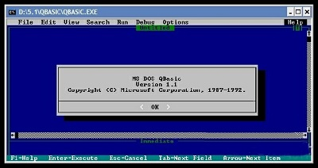
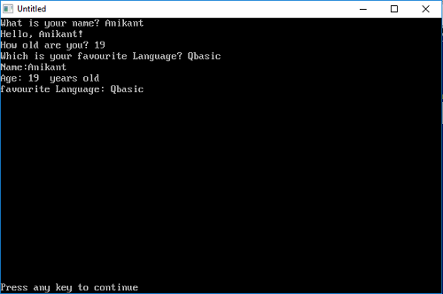

This content is designed to provide advanced skills in Information and Communications Technology (ICT) for Senior High School (SHS) students. It is expected that the knowledge and skills gained in this course will prepare students to pursue ICT courses in years ahead and provide them with the basic skills needed for the ICT job market. The syllabus covers selected topics in ICT which offer hands-on activities to help students acquire the required ICT skills.
Information systems (IS) are formal, sociotechnical, organizational systems designed to collect, process, store, and distribute information. In a sociotechnical perspective, information systems are composed by four components: task, people, structure (or roles), and technology. Read more on the slides...
A central processing unit (CPU), also called a central processor or main processor, is the electronic circuitry within a computer that carries out the instructions of a computer program by performing the basic arithmetic, logic, controlling, and input/output (I/O) operations specified by the instructions. The computer industry has used the term "central processing unit" at least since the early 1960s.....
In computing, a file system or filesystem (often abbreviated to fs), controls how data is stored and retrieved...
Computer data storage, often called storage or memory, is a technology consisting of computer components and recording media that are used to retain digital data. It is a core function and fundamental component of computers. There are mainly two types of storage: Primary storage and Secondary Storage....
Digital Culture stands for the contemporary phase of communication technologies, one that follows 19th-century print culture and 20th-century electronic broadcast culture, and that is deeply amplified and accelerated by the popularity of networked computers, personalised technologies and digital images. The emergence of digital culture is usually associated with a set of practices based on the ever more intensive use of communication technologies. Read more on the slide...
Technology and human life cannot be separated; society has a cyclical co-dependence on technology. We use technology; depend on technology in our daily life and our needs and demands for technology keep on rising.
Any information or data that is sent to a computer for processing is considered input. Input or user input is sent to a computer using an input device. The slide illustrates funtion of various input devices...
Any information that is processed by and sent out from a computer or other electronic device is considered output. An example of output is anything viewed on your computer monitor screen, such as the words you type on your keyboard. Output devices are devices that...
PROGRAMMING N QBASIC
Computer programming is a way of giving computers instructions about what they should do next. These instructions are known as code, and computer programmers write code to solve problems or perform a task. The source code of a program is written in one
or more languages that are intelligible to programmers, rather than machine code, which is directly executed by the central processing unit.
Examples of programming languages are:
- Java
- C#
- C
- C++
- Python
- Swift
an algorithm (/ˈælɡərɪðəm/ (About this soundlisten)) is a sequence of instructions, typically to solve a class of problems or perform a computation. Algorithms are unambiguous specifications for performing calculation, data processing, automated reasoning,
and other tasks.
A good algorithm has the following characteristics:
- Precision - the steps are precisely stated(defined).
- Uniqueness – results of each step are uniquely definedand only depend on the input and the result of the precedingsteps.
- Finiteness – the algorithm stops after a finite number ofinstructions are executed.
- Input – the algorithm receives input.
- Output – the algorithm produces output.
Some techniques used in representing algorithms are
- Pseudocode -- Also written as pseudo-code. A method of writing up a set of instructions for a computer program using plain English. This is a good way of planning a program before coding.
- Flow chart -- A diagram that shows a process, made up of boxes representing steps, decision, inputs and outputs.
The following are some simple examples of algorithm
- Algorithm examples
- Algorithm to add two numbers
Step 1: Start
Step 2: Declare variables num1, num2 and sum.
Step 3: Read values num1 and num2.
Step 4: Add num1 and num2 and assign the result to sum.
sum←num1+num2
Step 5: Display sum
Step 6: Stop
Step 1: Start
Step 2: Declare variables a,b and c.
Step 3: Read variables a,b and c.
Step 4: If a>b
If a>c
Display a is the largest number.
Else
Display c is the largest number.
Else
if b>c
Display b is the largest number.
Else
Display c is the greatest number.
Step 5: Stop
Step 1: Start
Step 2: Declare variables a, b, c, D, x1, x2, rp and ip;
Step 3: Calculate discriminant
D←b2-4ac
Step 4: If D≥0
r1←(-b+√D)/2a
r2←(-b-√D)/2a
Display r1 and r2 as roots.
Else
Calculate real part and imaginary part
rp←b/2a
ip←√(-D)/2a
Display rp+j(ip) and rp-j(ip) as roots
Step 5: Stop
Step 1: Start
Step 2: Declare variables n,factorial and i.
Step 3: Initialize variables
factorial←1
←1
Step 4: Read value of n
Step 5: Repeat the steps until i=n
5.1: factorial←factorial*i
5.2: i←i+1
Step 6: Display factorial
Step 7: Stop
A flowchart is a type of diagram that represents a workflow or process. A flowchart can also be defined as a diagrammatic representation of an algorithm, a step-by-step approach to solving a task. The flowchart shows the steps as boxes of various kinds,
and their order by connecting the boxes with arrows.
Each step in the sequence is noted within a diagram shape. Steps are linked by connecting lines and directional arrows. This allows anyone to view the flowchart and logically follow the process from beginning to end.
Example of a basic flowchart is shown below

Flowchart Symbols
You'll notice that the flowchart has different shapes. In this case, there are two shapes: those with rounded ends represent the start and end points of the process and rectangles are used to show the interim steps. These shapes are known as flowchart symbols.
Working examples of flowchart
-
Flow chart to add two numbers

-
Flowchart of factorial of a given number

The name QBasic is an acronym for Quick Beginners All Purpose Symbolic Instruction Code. It was developed and launched by Microsoft in the year 1991 and is considered to be one of the most ideal languages for absolute beginners. It was intended as a replacement
for GW-BASIC. QBasic was based on earlier QuickBASIC 4.5 compiler. It does not produce .exe files but instead generates files with extension .bas which can only be executed immediately by the built in QBasic interpreter. It is
based on DOS operating systems but is also executable on windows.

Some Basic useful commands on QBasic:
-
PRINT: This command prints the statement or data written after it. If the data to be printed is a string then it is written inside double quotes (” “) and if it is a number or a variable it
can be written directly.
EXAMPLE:- PRINT "HELLO WORLD"
- PRINT 45
- PRINT age
-
INPUT:
INPUTcommand is used to take inputs/data from the user. It can be used to input both strings and numbers.If the data to be taken is a numerical value then the variable name in which it is to be stored is written directly after the INPUT command.
Syntax:- INPUT "[message to user]"; [variable_name]
- INPUT age
If the data to be taken is string then the variable name in which it is to be stored is written followed by $ after the INPUT command.
- INPUT name$
-
CLS:
CLSstands for Clear Screen and is used to clear the screen if some previous results/outputs are present on the screen.
Below is a simple program to illustrate above commands:

Output:
Explanation:
When using INPUT commands, users are presented with the message associated with it and are asked to input values to variables.
PRINT statement prints the statements associated with it.
To make interesting and efficient programs, you can make QBasic to execute a part of a program more than once. This is called looping, when QBasic goes through a part of a program over and over again. This can be done with the GOTO command.
GOTO
The GOTO statement sends the procedure to a line label or a line number in the program.
Syntax
Description
Example
The GOTO statement sends the procedure to a line label or a line number in the program.
Syntax
GOTO {lineNumber|lineLabel}
Description
- lineNumber or lineLabel must already exist or an IDE status error will be displayed until it is created.
- Can be used in SUB or FUNCTION procedures using their own line labels or numbers.
- The frequent use of GOTO statements can become confusing when trying to follow the code and it could also cause endless loops.
- GOTO is an easy trap for new programmers. Use other forms of loops instead when possible.
Example
1 PRINT "first line": GOTO gohere
2 PRINT "second line": GOTO 3
gohere:
PRINT "third line"
GOTO 2
3 END
2 PRINT "second line": GOTO 3
gohere:
PRINT "third line"
GOTO 2
3 END
first line
third line
second line
Explanation: After it prints "first line" it goes to the line label "gohere" where it
prints "third line", then it goes to the line that is numbered "2" and prints "second
line" and goes to line number 3 and an END statement which ends the program.
third line
second line
To avoid been confused and the high possibility of infinite loops, other forms of loops are recommended.
FOR...NEXT
This command allows you to execute a part of a program a certain number of times. It looks like this:
FOR i = 1 TO 4
PRINT "I am looping!"
NEXT i
This will be your output...
I am looping!
I am looping!
I am looping!
I am looping!
With FOR...NEXT you can use the STEP command, which tells QBasic how to count from one number to another. If you type:
FOR j = 0 TO 12 STEP 2
PRINT j
NEXT j
it will count by two:
0, 2, 4, 6, 8, 10, 12
You can also count backwards.
FOR d = 10 TO 1 STEP -1
PRINT d
NEXT d
When you want QBasic to count backwards, always put STEP -1 (or -whatever)!
DO...LOOP
Imagine that you have a program that works like an ordinary calculator: you enter numbers, QBasic calculates and shows the result, and the program ends. The program may be good, but one problem is that you have to run the program each time you want to calculate! That’s where the handy DO...LOOP comes in. It’s a block of comands, where the program doesn’t have to loop a certain number of times, like in FOR...NEXT. It can loop indefinitely, while the condition is met (and when it’s not met, the loop stops), or until the condition is met (so, when it’s met, the loop stops). Condition is basically the same as an argument, for example f < 20
Here's an example...
DO
PRINT "Enter a number."
PRINT "When you want to quit, press 0."
INPUT n
r = n / 2
PRINT n; "/2 ="; r
LOOP WHILE n > 0
END
When you run this program, you can enter numbers and get the result as many times as you
like. The program loops while numbers you enter are more than 0. Once you’ve entered 0,
the program ends. The condition WHILE n > 0 is put by the LOOP
command but you can stick it to the DO command, like that: